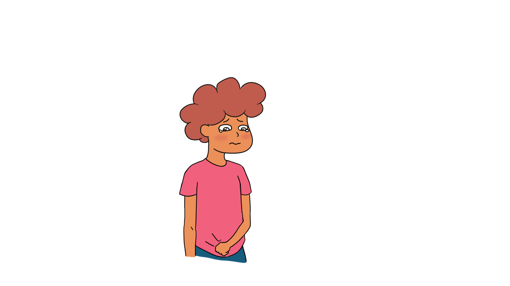
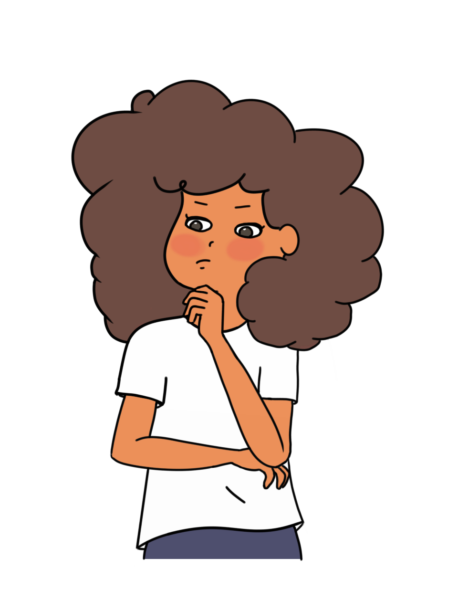
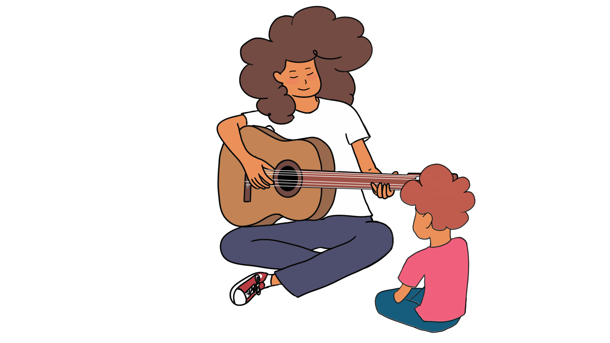

Vous allez vivre l'histoire de Sofia et Noa. Pour se faire, continuez de scroller verticalement afin de révéler le fil du récit.
Vous serez amener à faire des choix, qui finiront par avoir une conséquence sur les vies de nos protagonistes. Pesez le pour et le contre, et menez
nos deux personnages hors de leur enfer.
Mère : Ah vous voilà enfin !Sofia: Oui *soupir*, ils ont rajouté un autre point de contrôle sur le cheminMère : Le dîner est déjà prêt !Père : A table !Noa : Ouaaaais !
Le lendemain, la guerre éclate dans le pays pendant que Sofia et Noa sont à l'école.
Ils se précipitent vers leur maison, en espérant trouver leurs parents sains et saufs.

Noa : Maman, papa ! Sofia: Attends, je les appelle. (sans succès) Bon… Ils sont sûrement à la frontière.Chauffeur de bus : Oh mon Dieu ! Venez, je vous amène.
N'ayant pas trouvé leurs parents à côté de leur domicile désormais en ruine,
Sofia et Noa entreprennent un petit voyage vers la frontière, en espérant les y retrouver là-bas.
Noa: *pleure*Sofia : Tiens, prend cet écouteur *écoutent de la musique*
Sofia et Noa arrivent dans la zone avant la frontière.
Aucune trace des parents, ils apprennent que les premiers arrivés ont déjà pris le large.
Ils attendent plusieurs jours dans un hôtel où ils sont entassés avec d’autres migrants.
On leur distribue de petites rations de nourriture.


Noa: Sofia je m'ennuie, c'est quand qu'on retrouve maman et papa?Sofia : Bientôt je te le promets, tu veux que je te joue de la guitare ?Noa : Oui oui s'il te plait !
Comment passer la frontière ? A qui faire confiance ?
Aux autorités qui ont promis d’organiser des ferrys pour les faire traverser ou à un passeur qui peut les faire passer clandestinement ?
Sofia : Noa, t’as combien dans ta tirelire ?Noa : Pas beaucoup, regardeSofia: C'est suffisant pour payer le passeur, mais que faire?Sofia: Mieux vaut économiser et prendre le ferrySofia: Mieux vaut payer le passeurPasseur: Hé, la guitare c’est comme un passager en plus!
Sofia et Noa arrivent finalement à un camp de réfugiés.
Responsable *criant à tous les nouveaux arrivants* : Mettez-vous en ligne, on va vous fouiller.
Mettez-vous de suite à construire votre abri, il va pleuvoir cette nuit. Noa *reconnaît un ami de son père* : Hey, on le connaît lui ! *l'individu disparaîtSofia : Qui ça ? Vite, il faut se dépêcher à construire la tente avant la tombée de la nuit
La nuit tombe. Sofia et Noa essayent de monter leur tente de fortune.
Noa s'assoupit de fatigue.
Farel : Hey, tu es Sofia ?! Que fais-tu là avec ton frère sans tes parents?Farel : Mais voyons, c’est moi, Abel ! Je ne te veux rien de mal, ne t’en fais pas. Je sais où sont tes parents et ils vont bien.
Je peux t’aider. Mais ici, tout se monnaye.
Sofia travaille au camp pendant plusieurs jours afin de récupérer assez d’argent
pour acheter un billet de train. Elle aide à cultiver les pommes de terre dans le petit potager,
elle fait la lessive et aide à construire les tentes des nouveaux arrivants.
Le salaire est maigre et la nourriture se fait rare. Noa est de plus en plus fatigué.
Pourvu que les informations d’Abel les mènent au bon endroit.
Noa : Maman ! Papa !Sofia : Comment saviez-vous qu’on arriverait aujourd’hui ?Mere: On ne le savait pas, on venait ici chaque jour dans l’espoir de vous retrouver.Pere: Oui, on savait que vous sauriez vous en sortir. Sofia tu as su t’occuper de ton petit frère
et le rassurer dans les moments difficiles.Noa: Où sont Papa et Maman?Sofia: On va les chercher, il ne faut pas perdre espoir Noa
Ainsi s'achève l'histoire de nos deux personnages. Cependant, des choix différents les auraient conduits
à un chemin différent, qui sait...